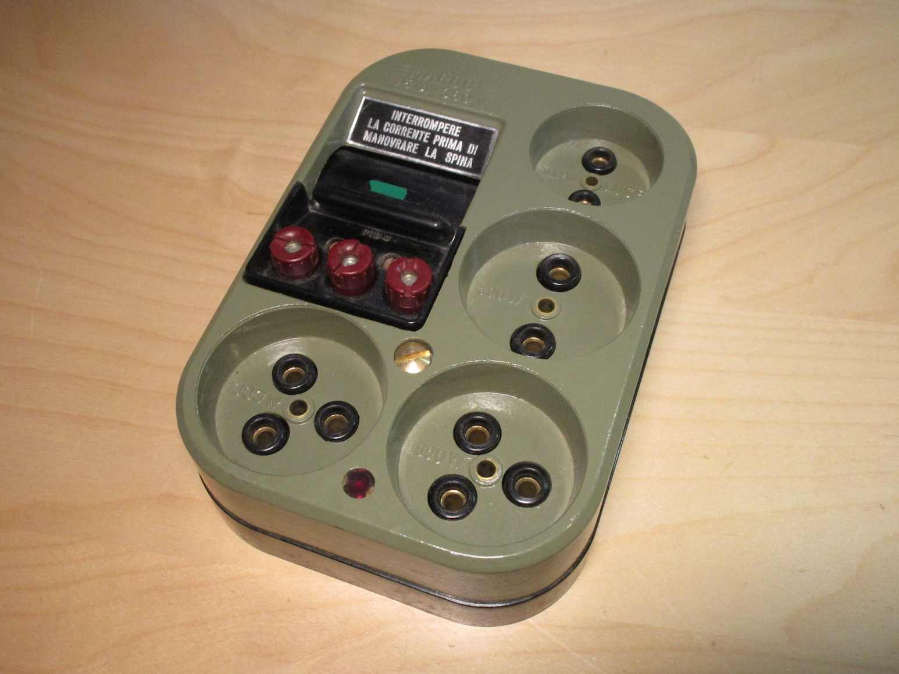
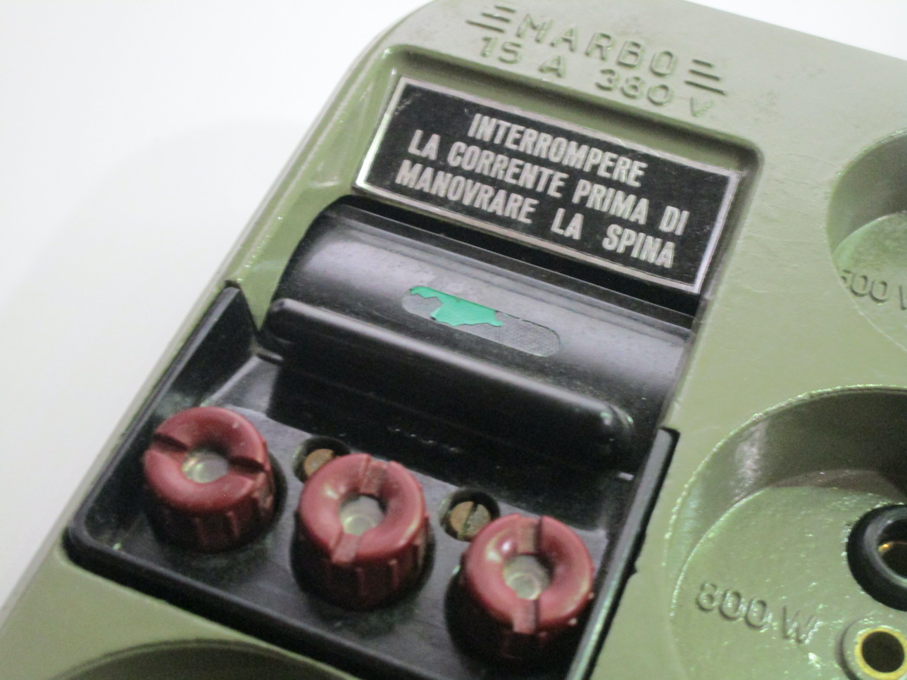
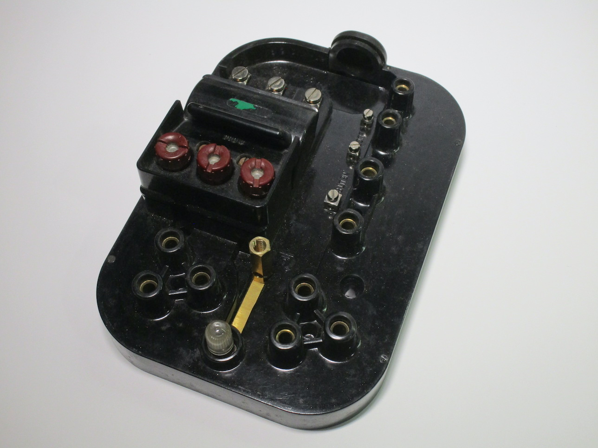
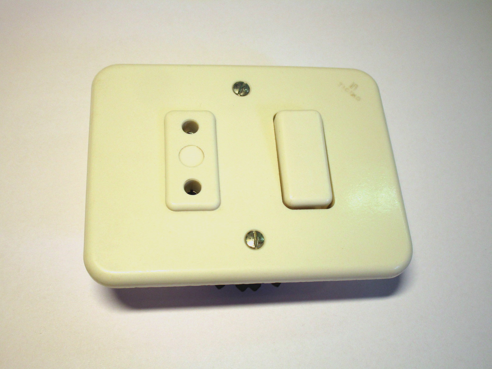
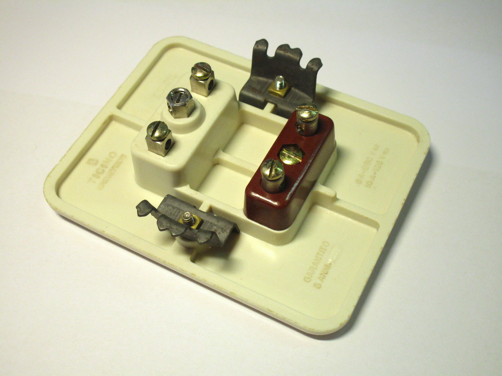
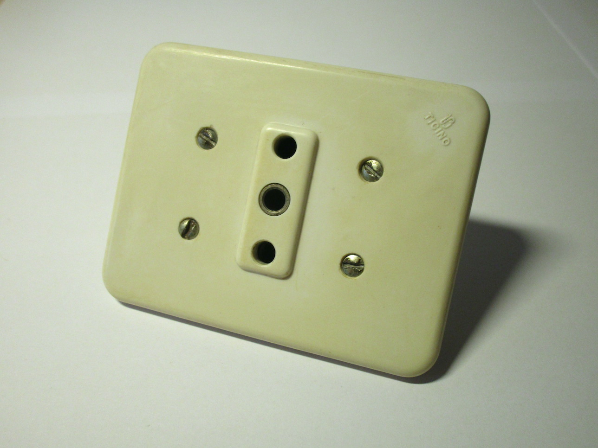
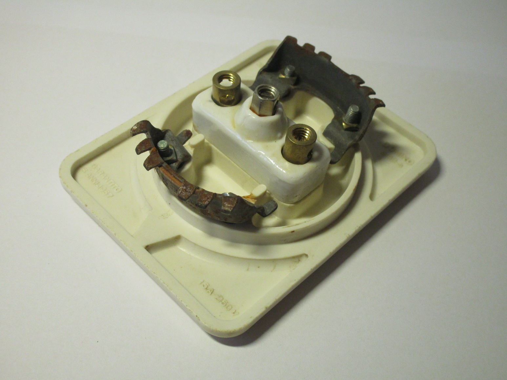
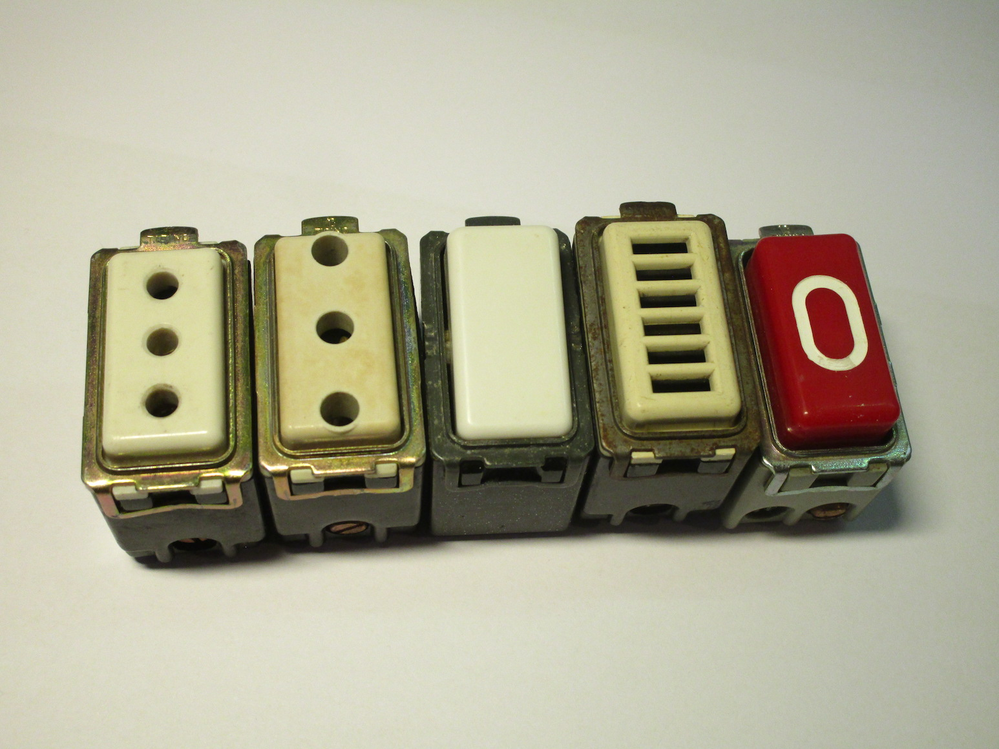
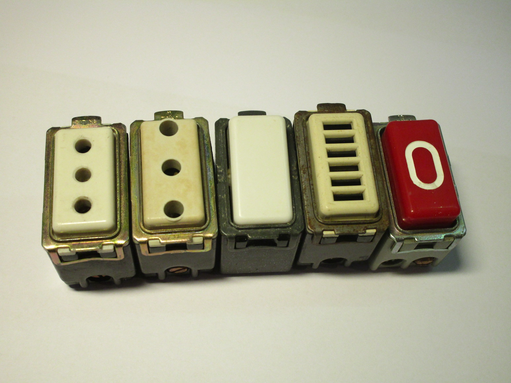

Vintage sockets and lightswitches
Surface mount sockets
"Marbo" fused multi-socket device
Rating: 15A 380V
  {kind=link}
{kind=link}
{kind=link}
Devices for round boxes
The BTicino Domino series
Rating: 10A 125V or 6A 250V
 {kind=link}
{kind=link}
Rating: 15A 250V
 {kind=link}
{kind=link}
Other BTicino Domino sockets
Rating: unknown, but other sockets similar to the first two seem to be rated 10A @ 125V or 6A @ 250V
These are old sockets made by BTicino.
They're original to the house they're in (which is from the 50s) and they're all still in service today.
They're old enough to lack the safety features found in all modern sockets, such as protective shutters, though some
of them seem to, at least, have an earth pin (not that it matters a lot since that house doesn't have an earthing system!).
The 16A socket, in the last picture, is interesting because the earth hole on it is smaller than it normally is:
so most 16A plugs probably won't fit in it because of this.
Because of the lack of an earth connection in some of these sockets, adaptors with their earth pins cut off are often used
when connecting appliances to outlets like these.
{kind=link}
{kind=link}
{kind=link}
Devices for rectangular boxes
BTicino Magic modular devices
Rating: 10A or 16A 250V, depending on the module

 

{kind=link}